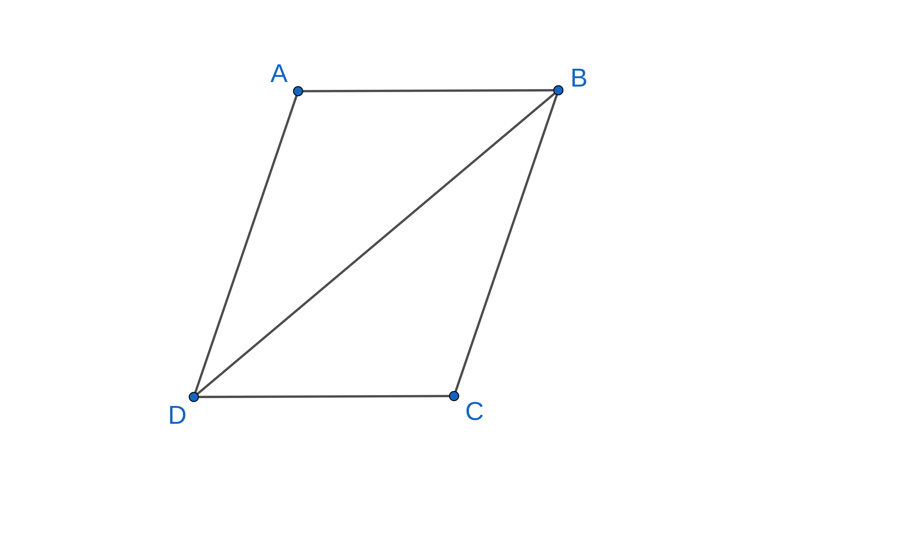

Introduction¶
Head of the Family¶
Parallel lines are the stuff parallelograms are made of. To produce a bounded shape we need at least three lines. A triangle is the simplest such shape. If we want to get a bounded shape but using parallel lines, then we need at least four lines. Thus a parallelogram is a four-sided shape formed when two pairs of parallel lines intersect each other.

Criss-crossing rail tracks form a parallelogram. The next time you go in a train, remember that at some point you would be moving over a parallelogram. The beauty of this shape is that its definition becomes obvious once we specify two requirements:
- parallel lines
- bounded shape
Another way of saying this is that a parallelogram is the most efficient way of creating bounded shapes with parallel lines: remove one line and there is no bounded shape to talk about. Parallelograms have a number of properties that make them delightful objects to study. Let us probe further. If we wish to do something useful with parallel lines, we need a transversal. That unlocks relations between angles that might be handy later. So let us first connect any pair of opposite vertices, say \(B\) and \(D\), called a diagonal of the parallelogram. This has the nice property of being a transveral for both pairs of parallel sides.
We make the following immediate observations:
- The diagonal divides the parallelogram into two triangles: \(\bigtriangleup ABD\) and \(\bigtriangleup CDB\)
- \(\angle ABD = \angle CDB\) (as \(AB\) || \(CD\) cut by \(BD\))
- \(\angle ADB = \angle CBD\) (as \(AD\) || \(BC\) cut by \(BD\))
The two triangles have two angles that are equal. We smell congruence here. Do we have an included side? Yes! \(BD\) is the common side. So triangles \(\bigtriangleup ABD\) and \(\bigtriangleup CDB\) are congruent by the \(ASA\) criterion. We can deduce the following results using the congruence:
- \(AB = CD\) and \(AD = BC\)
- \(\angle BAD = \angle BCD\)
How do these symbols translate to words?
In a parallelogram
- opposite sides are equal
- opposite angles are equal
A great quality of a parallelogram is that its properties are also equivalent ways of specifying the same object. The following are at once properties and definitions of a parallelogram:
- opposite sides parallel to each other (primary definition)
- opposite sides equal to each other
- a pair of opposite sides parallel and equal to each other
- diagonals bisect each other
Properties of other members¶
We now specify the properties of few other members.
- Rectangle
- The diagonals are equal
- The diagonals intersect at right angles iff the rectangle is a square. For a strict rectangle, the diagonals cannot intersect at right angles.
- Rhombus
- The diagonals bisect each other at right angles
- Square
- The diagonals are equal and bisect each other at right angles
Symmetries¶
- Central symmetry
- The point of intersection of diagonals is a center of symmetry. Rotating the parallelogram \(180^{\circ}\) about this point will result in the same figure.
- Axial symmetry
- A rectangle has two axes of symmetry given by perpendicular bisectors of the sides
- A rhombus also has two axes of symmetry given by the diagonals
- A square has four axes of symmetry
Inheritance¶
There are certain relationships among the different members of the parallelogram family. We club them under the term "inheritance". The head of the family is the parallelogram itself.
- A rectangle is a parallelogram.
- A rhombus is a parallelogram.
- A square is a parallelogram, a rectangle and a rhombus.
The parallelogram family¶
The members of the family are arranged in the order of increasing constraints or decreasing information.
| Object | Constraint | Information | Degrees of freedom | Symmetries |
|---|---|---|---|---|
| Parallelogram | opposite sides parallel | side side angle |
3 | Central |
| Rectangle | opposite sides parallel adjacent sides perpendicular |
side side |
2 | Central Axial |
| Rhombus | opposite sides parallel adjacent sides equal |
side angle |
2 | Central Axial |
| Square | opposite sides parallel adjacent sides equal adjacent sides perpendicular |
side | 1 | Central Axial Axial |
The Philosophical Parallelogram¶
- The most information hungry object is the freest.
- If you want freedom then be prepared to work hard to achieve it. If you need freedom you need to work for it.
- Freedom is a great privilege that you need to earn.
- We seek squares because they require least effort to specify exactly. But look how constrained it is. It is easy to build a square, but being one is tough.
- A square symbolizes conformity. Be a parallelogram, constantly strive for freedom and diversity.
- Oh stifled squares, be plastic parallelograms. Better yet, become queer quadrilaterals if that be your maker's order.
- If you are born to be a quadrilateral of a given shape, will not being a square be suffocating. Let us have nothing to do with conformity.
- God created a curved space-time, man turned it flat with his Cartesian conventions, until his messenger made it curved once more.
- The parallelogram is a typical example of restrained freedom.
- The number of letters also reflect the freedom enjoyed by these shapes.